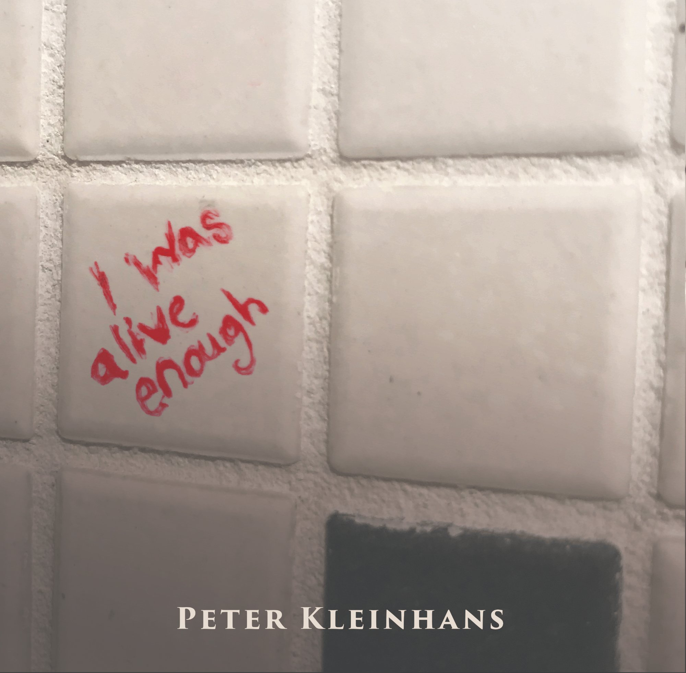

Our Journeys
Track 05 · I Was Alive Enough (2020)

May in New Orleans, the year 1880
I stood by the dock to wait for a lady
The great Mississippi, it was rough, it was wide
And my hand held a picture of my mail order bride
She was sturdy, she was forty, her words wise and kind
And though she was no beauty, my heart paid it no mind
For it was time that I married, and I knew I was ready
For my Julia, loyal and solid and steady
Then the boat was unloaded, the last traveler gone by
And none like my Julia had passed by my eye
My heart, it grew colder, and my body felt older
Then I heard a soft voice, felt a young hand on my shoulder
She said waltz into darkness with me
Waltz into darkness with me
Place your ring on my finger, there's no more need to be free
Come waltz into darkness with me
She said I was wrong to deceive you,
I should have played by the books
But you know I don't want a husband who just wants my looks
I looked at this angel, I said well I've lied too, honey
'Cause I don't want a wife who just wants my money
And oh what a wedding, and oh what a bedding
Each one of us giving, each one of us getting
Lost in the spin of our twirling romance
With our feet off the floor in the whirl of the dance
Oh, oh, but we make a fine pair
With my dashing new top hat, the blonde rings in your hair
And how can it be that we'll come to harm
With a smile on my face and your hand on my arm
One day in July I got a call from my banker
He said I don't mean to alarm you, but I've got to be frank for
There was a woman just here with a slip to withdraw
And I couldn't deny her: she's your wife by law
Deep in my dread and my doom I drove on
Through a wicked wind home to find my wicked wife gone
She'd called a coach and she'd left the house
And she'd left fifty-five dollars of fifty-five thousand
Waltz into darkness with me
Waltz into darkness with me
Where every right step is as wrong as can be
Come waltz into darkness with me
I found a detective and I gave him my proxy
To chase her, while I got drunk in Biloxi
With a fire in my belly, and a heart like a stone
And a gun at my side for if I found her alone
One day my man called, he said your wife's in your town
At the Great Southern Hotel on the Mississippi Sound
Room 25, that's the number you need
And keep hold of your senses, man, I wish you Godspeed
I hid in the corner as she entered the room
Like a hot torch flame blazing in the dark and the gloom
She turned when she saw me, and my gun in her eyes
She said 'but why take me dead, when you can take me alive?'
And the gun and my anger had dropped to the side
And what man was so lucky to have such a bride
As this treacherous turncoat in ribbons and lace
With the devil's design and a goddess' face
She said the law's on my tail, so what about you
I said I guess if they get you, they can have me too
She said OK if you're in, then let's catch a train
So we left for Mobile into a slashing black rain
Oh, oh, but we make a fine pair
With my dashing new top hat, the blonde rings in your hair
And how can it be that we'll come to harm
With a smile on my face and your hand on my arm
But I knew that detective, one day he'd find us
No matter the trains or the towns left behind us
There was a ring on our doorbell on a November morn'
And he was there like my conscience, his face full of scorn
He said I've seen some fine fools, but never one quite like you, see
Taken to town twice by the same worthless floozy
I was calm and collected, my eyes clear and hot
And I raised up my gun and I took a clean shot
How easy it is to take the wrong life
How easy it is to choose the wrong wife
Yes I married disorder, my perilous mate
Fly with me together to our ruinous fate
Empty my bank account, empty my soul
Flood me with sunlight that's blacker than coal
Seduce and surrender, destroy and deny
My coquettish pretender: my whole truth, my lie
Waltz into darkness with me
Waltz into darkness with me
I hope you're well pleased with this vision you see
Come waltz into darkness with me
Waltz into darkness with me, Waltz into darkness with me
Around and around, watch your step 1-2-3
Come waltz into darkness with me